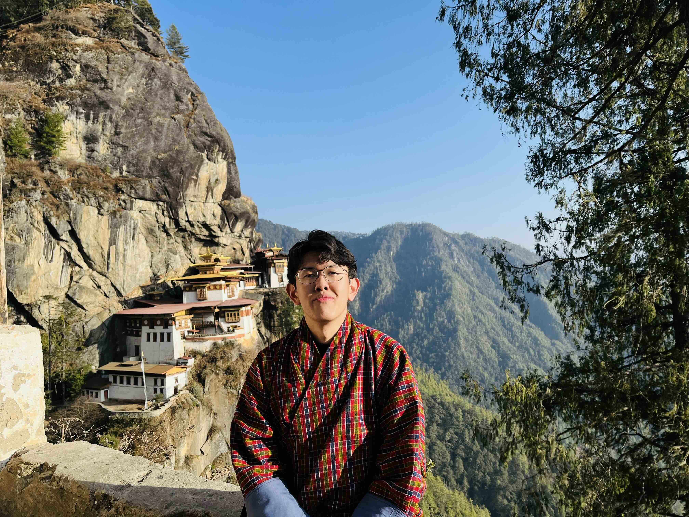

I am an engineer at heart. I founded KarmaFlow where I focus on optimizing visibility in the emerging AI search space. Also at Rezi, I lead and build projects for AI systems that address career-related challenges spanning job application, recruitment, and hiring.